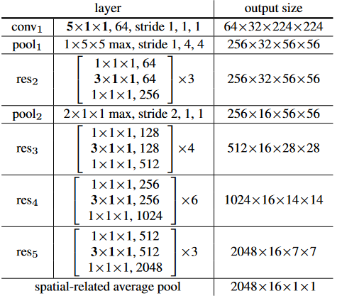
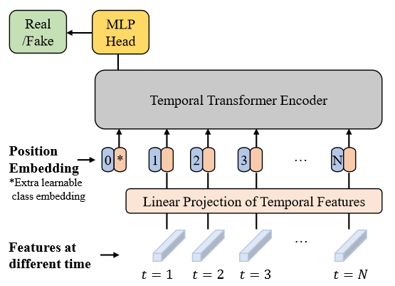
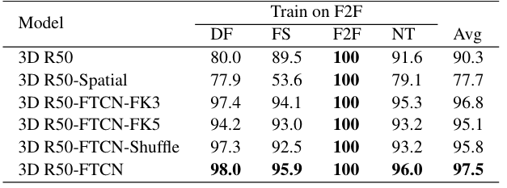
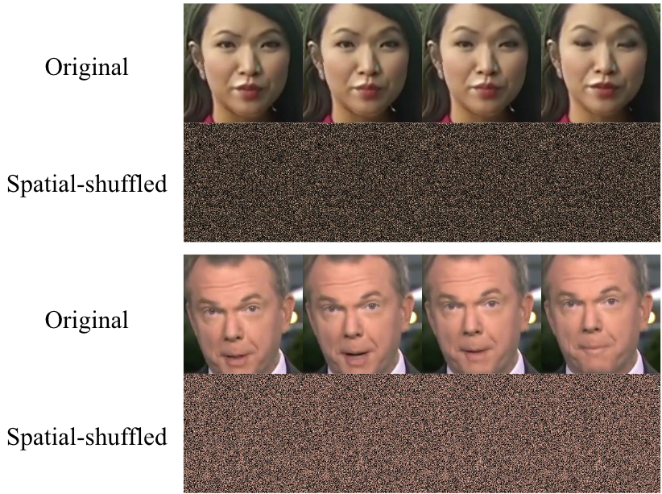
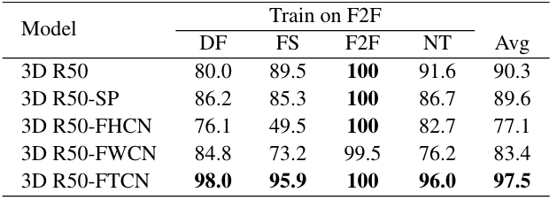
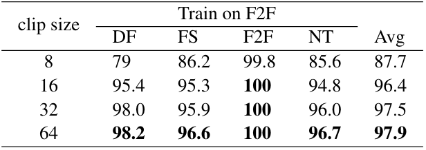
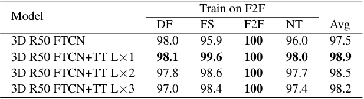

1. 引言
由于绝大多数伪造视频都是以逐帧伪造的方式生成的，这样独立生成的每张人脸在时序上不可避免地导致闪烁和不连续，如下图所示。所以可以利用时序相关性来实现更泛化和鲁棒的人脸伪造视频检测。
人脸伪造视频主要有两类伪影，一类是空间相关的融合边界(blending boundary)、棋盘格和模糊伪影等，一类是时序相关性。但通常方法都侧重于检测空间相关伪影，为了学习到更多的时序不一致性信息，本文提出了FTCN（fully temporal convolution network），关键思想是限制模型学习空间相关的伪影。另外，发现一些不相邻的帧之间也会出现不一致性，故提出用Transformer来解决时间维度上的长依赖关系。
本文的方法可以从头开始训练而不需要预训练模型，并且可以在没有人工标注的情况下定位和可视化伪造视频中的时序不一致性。
本文主要贡献总结如下：
- 探索充分利用时间相关性进行人脸伪造检测，并提出了一种结合全时序卷积网络(FTCN)和Transformer的框架来显式检测时间不一致性。
- 本文的检测器可以定位和可视化人脸伪造的时间不连续部分。
- 在各种数据集上的实验证明了本文提出的方法在泛化能力方面的优越性。
2. 方法
为了学习到更多的时序不一致性信息，提出FTCN。具体的，将所有与时间相关的卷积核大小不变，但将所有与空间相关的卷积核大小设置为1。用ResNet-50(R50)作为backbone，通过以下实验验证：
- 3D R50
- 2D R50
- 3D R50 FTCN
通过在FF++数据集上训练，t-SNE可视化结果如下图。分析可知，虽然所有分类器都能区分真假数据，但是假数据的分布完全不同。3D R50和2D R50都会将不同的人脸操纵方法产生的虚假数据分离出来，这表明它们提取的特征包含了每种伪造算法的独特伪影，这会影响泛化能力。相反，3D R50 FTCN分类器的造伪数据更多的混合在一起，这证明了时序网络是通过更一般的时序不一致来学习分类的。
(d)是FTCN结合Transformer的结果。
2.1 总体框架
给定可疑视频V，首先由FTCN处理局部时序闪烁和一致性，提取到时序特征F，然后用时序Transformer处理长依赖不一致性，最后通过MLP分类。
-
Fully Temporal Convolution Network(FTCN)
传统的3D CNN通过 $K_t\times K_h\times K_w$的卷积核来提取空间时序关联信息。但本文发现这样的卷积核容易弱化时序信息，为了解决这个问题，将空间相关的卷积核大小设置为1。但此时若某些stride大于1，则会有部分区域在卷积时被忽略的问题。于是FTCN将3D卷积核($K_t,K_h,K_w,S_t,S_h,S_w$)设置为($K_t,1,1,1,1,1$)，S表示stride。并且如果$S_h$ or $S_w > 1$，则在卷积操作后添加一个最大池化(max-pooling)。
具体的3D R50-FTCN模型结构如下图所示。卷积核大小为$K_t\times K_h\times K_w$，输出维度大小为$C\times N\times H\times W$，输入为$3\times 224\times 224$。FTCN最终输出的特征图$\mathbf{F}\in \mathbb{R}^{C\times N\times H\times W}$(C=2048,N=16,H=W=1)。
 -
Temporal Transformer(TT)
FTCN输出的特征图$\mathbf{F}$可以视作特征序列$\mathbf{F}_t\in\mathbb{R}^C,t\in{{1,2,\dots,N}}$，TT如下图所示。
TT的输入序列$z_0$可以表示为： $$ z_0=[\mathbf{F_{\text{class}}},\mathbf{WF_1},\mathbf{WF_2},\dots,\mathbf{WF_N}]^T+\mathbf{E_{pos}} $$ $W\in\mathbb{R}^{D\times C}$为映射矩阵，将维度C映射为D。$\mathbf{E}_{pos}\in\mathbb{R}^{(N+1)\times D}$。
对于最后一个Transformer块的输出，经过MLP得到最终的伪造概率： $$ y=\mathbf{MLP}(\mathbf{LN(\mathbf{z}_L^0)}) $$
3. 实验
3.1 实验设定
-
实现
将3D R50作为FTCN的基础结构仅使用一层Transformer，self-attention heads,hidden size, MLP size分别是12,1024,2048。
3.2 未知伪造方法的泛化性
在FF++(c23)数据集上，用其中三类伪造方法训练，在剩余的一种伪造方法上测试，实验结果如下图所示：
同Face X-ray和LipForensics相比，本方法参数量小，不用额外数据，不需要预训练，结果如下图所示：
3.3 未知数据集的泛化性
3.4 未知扰动的鲁棒性
3.5 消融实验
-
Why remove the spatial convolution? 验证FTCN中溢出空间卷积的效果。在F2F上训练，实验结果如下图所示(videol-level)。
-
3D R50：原始的3D ResNet-50模型
-
3D R50-Spation：将3D卷积核($K_t,K_h,K_w,1,1,1$)替换为($1,K_h,K_w,1,1,1$)，仅保留空间卷积
-
3D R50-FTCN_FK3：将3D R50-FTCN的第一个3D卷积核替换为(5,3,3,1,1,1)，包含空间卷积
-
3D R50-FTCN_FK5：将3D R50-FTCN的第一个3D卷积核替换为(5,5,5,1,1,1)，包含更大的空间卷积
-
3D R50-FTCN-Shuffle：网络结构与3D R50-FTCN相同，但使用
spatial-shuffled作为输入。spatial-shuffle操作在保留像素级时间连续性的同时，在空间维度上将像素随机化，如下图所示。 -
3D R50-FTCN
分析实验结果：1）3D R50 和 3D R50-Spatial的实验结果相比，验证了时序信息的有效性；2）3D R50, 3D R50-FTCN-FK5, 3D R50-FTCN-FK3, 3D R50-FTCN的实验结果相比，验证了空间卷积涉及的内容越少，性能越好；3）即使通过像素随机破坏了空间信息，但3D R50-FTCN仍能达到客观的性能，验证了3D R50-FTCN主要学习具有判别行的时序相关信息。
-
-
Is limited model capability that benefits generalization capability? 验证有限的模型能力能达到更好的泛化性。在上述的消融实验中，随着空间卷积涉及的内容越少，模型的能力也越弱，但泛化性越更好，在F2F上训练，实验结果如下图所示(videol-level)。
- 3D R50-SP：与3D R50-FTCN具有相同的参数量，是通过减少3D R50模型的通道数创建的
- 3D R50-FHCN：将3D卷积核($K_t,K_h,K_w,S_t,S_h,S_w$)替换为($1,K_h,1,1,1,1$)，当$S_h$ or $S_w > 1$时添加MaxPool($1,S_h,S_w$)
- 3D R50-FWCN：将3D卷积核($K_t,K_h,K_w,S_t,S_h,S_w$)替换为($1,1,K_w,1,1,1$)，当$S_h$ or $S_w > 1$时添加MaxPool($1,S_h,S_w$)
分析实验结果：1）3D R50-SP与3D R50-FTCN具有相似的参数量，但3D R50-FTCN性能更好，验证了性能增益来自于全时序设计；2）3D R50-FHCN与3D R50-FWCN与3D R50-FTCN具有完全相同的参数量，但性能缺低了很多，进一步验证了时序伪影更具有一般性。
-
视频帧数量的影响
视频帧数越多，性能越好，但计算成本也更高，选取32是一个比较合适的大小。
-
Transformer的作用
实验结果表明TT能提高性能和泛化性，但更多的TT层不能进一步提高性能。
3.6 时序不一致性定位
在测试时，对于一个输入片段，在空间域上滑动一个窗口。对于滑动窗口之外的区域，将它们的RGB值替换为零。然后将修改后的剪辑输入到伪造分类器中，估计窗口区域的伪造概率。上图展示了本文方法能准确地定位有时序伪影的区域。